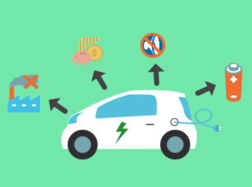
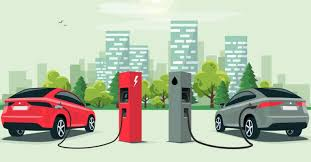
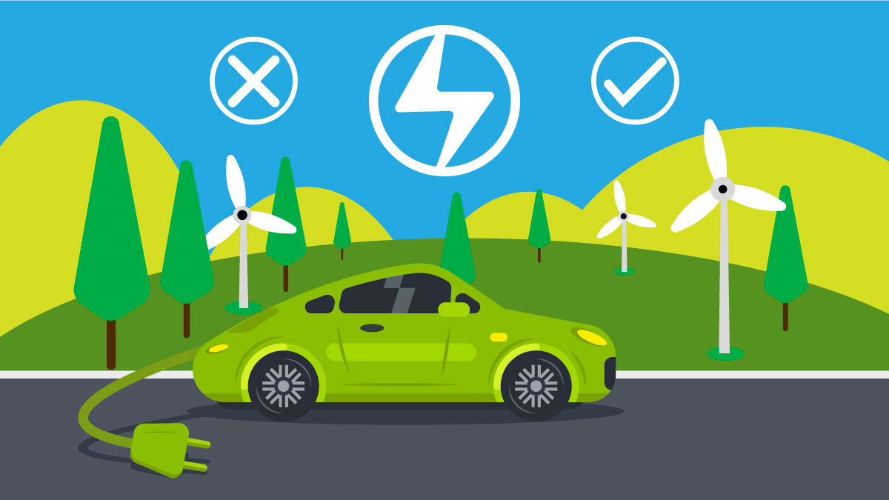

Cero Emisiones Directas: Esta es quizás la ventaja más conocida. Los carros eléctricos no emiten gases de escape (como CO2, óxidos de nitrógeno y partículas) durante su funcionamiento. Esto contribuye a una mejor calidad del aire en las ciudades y ayuda a combatir el cambio climático.
Menor Contaminación Acústica: Son notablemente más silenciosos que los vehículos de combustión interna. Esto reduce la contaminación sonora en las ciudades, haciendo los entornos urbanos más agradables y menos estresantes.
Eficiencia Energética: Los motores eléctricos son inherentemente más eficientes en la conversión de energía en movimiento que los motores de combustión. Esto significa que aprovechan mejor la energía que consumen.

Ahorro Económico
Menor Costo de "Combustible": La electricidad generalmente es más barata por kilómetro recorrido que la gasolina o el diésel. Cargar el carro en casa o en estaciones públicas puede resultar en ahorros significativos en comparación con el llenado de un tanque de gasolina.
Menor Costo de Mantenimiento: Los motores eléctricos tienen muchas menos piezas móviles que los motores de combustión interna. Esto se traduce en menos desgaste y, por lo tanto, en menos visitas al taller y menores costos de mantenimiento. Olvídate de cambios de aceite, filtros de aire, bujías, correas de distribución, etc. Se estima que el mantenimiento de un eléctrico puede ser entre un 28% y un 80% más barato.
Incentivos Fiscales y Gubernamentales: En muchos lugares, incluyendo México, los carros eléctricos se benefician de incentivos como:
Exención del Impuesto Sobre Automóviles Nuevos (ISAN).
Descuentos en el Impuesto sobre Vehículos de Tracción Mecánica (IVTM) a nivel municipal.
Posibilidad de tarifas de electricidad especiales para carga en el hogar (en México, la CFE puede facilitar la instalación de un medidor independiente para evitar que la carga del auto eleve tu tarifa doméstica a DAC).
No pago de tenencia o verificación en algunos estados o ciudades.
Estacionamiento gratuito o preferencial en algunas zonas.

Experiencia de Conducción Superior:
Aceleración Instantánea: Los motores eléctricos entregan el par motor máximo desde 0 RPM. Esto se traduce en una aceleración inmediata, suave y potente, sin tirones ni cambios de marcha. Es una experiencia de conducción muy dinámica y divertida.
Conducción Silenciosa y Suave: La ausencia de un motor de combustión y una transmisión de varias velocidades hace que la conducción sea notablemente más silenciosa y sin vibraciones, lo que contribuye a una experiencia más relajada y confortable.
Frenado Regenerativo: Esta característica permite que el motor actúe como generador al desacelerar o frenar, convirtiendo la energía cinética del vehículo en electricidad que se devuelve a la batería. Esto no solo mejora la eficiencia, sino que también reduce el desgaste de los frenos tradicionales.

Conveniencia y Tecnología
Carga en Casa: La posibilidad de "echar gasolina" en tu propia casa durante la noche es una gran comodidad. Te despiertas cada mañana con el "tanque lleno".
Menos Viajes a la Gasolinera: Si tienes un cargador en casa o en el trabajo, las paradas en gasolineras se vuelven algo del pasado.
Tecnología Avanzada: Los carros eléctricos suelen incorporar tecnologías avanzadas en sus sistemas de infoentretenimiento, asistencia al conductor y actualizaciones de software "over-the-air" (OTA) que pueden mejorar el rendimiento y añadir funciones nuevas.
Mayor Confiabilidad: Al tener menos piezas móviles complejas que los motores de combustión, los vehículos eléctricos suelen ser más confiables y menos propensos a averías mecánicas.